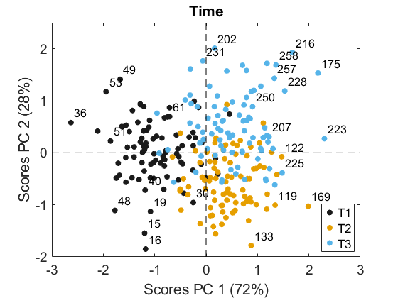

Ferrer et al. INTESTINAL MICROBIOTA INFLAMMATORY PROFILE IN LATE-FETAL GROWTH RESTRICTION WOMEN, 2025.
Script to analyze Bloodhemo data (after outliers removal)
We consider the following model:
X = A + B + C(A) + AB
with A: Class (Control vs IUGR), B: Time (T1, T2, T3), C(A): Individual
Software preparation: Install MEDA-Toolbox v1.8
coded by: Jose Camacho (josecamacho@ugr.es) last modification: 15/May/2025
Copyright (C) 2025 University of Granada, Granada
This program is free software: you can redistribute it and/or modify it under the terms of the GNU General Public License as published by the Free Software Foundation, either version 3 of the License, or (at your option) any later version.
This program is distributed in the hope that it will be useful, but WITHOUT ANY WARRANTY; without even the implied warranty of MERCHANTABILITY or FITNESS FOR A PARTICULAR PURPOSE. See the GNU General Public License for more details.
You should have received a copy of the GNU General Public License along with this program. If not, see http://www.gnu.org/licenses/.
Contents
Prepare data
clear close all clc % comment the line below to observe full randomness rng(0); % we fix the random seed for repetitivity, but permutation testing is stochastic so a little variability is expected in the p-values and associated figures pvalue = 0.05 load blood_hemo_vasca.mat X_ASCAt(:,7) = []; % Deleting mother weight var_final(7) = []; X = X_ASCAt; Xraw = X_ASCAt; F = F_ASCA; var_l = var_final; indout = find(F(:,3)==43); % Deleting outlier found in first step X(indout,:) = []; F(indout,:) = []; Xr = rankTransform(X); Xn = X; Xn(find(isnan(X)))=0; Xrn = X; Xrn(find(isnan(X)))=0; X = [X Xr]; % Careful: use [X/norm(Xn) Xr/norm(Xrn)] if not autoscaled for i=1:length(var_final), var_l{end+1} = strcat(var_l{i},'-RT'); end clear X_ASCAt F_ASCA var_final Xr Xn Xrn
pvalue =
0.0500
FDR (Q-value)
[T, parglmoMC] = parglmMC(X, F, 'Model', [1 2], 'Mtc', -1, 'Nested', [1 3], 'Random', [0 0 1]); T.Source(2:5)={'F1: LFR/Ctrl','F2: Time','F3: Individual','Int Class x Time'}
T =
7×7 table
Source SumSq AvPercSumSq df MeanSq MaxF minPvalue
____________________ __________ ___________ ___ __________ ______ __________
{'Mean' } 1.6798e+05 82.593 1 1.6798e+05 NaN NaN
{'F1: LFR/Ctrl' } 14.439 0.088496 1 14.439 4.9391 0.89586
{'F2: Time' } 315.18 1.5916 2 157.59 107.44 0.00014285
{'F3: Individual' } 1844.5 9.0511 84 21.959 9.4794 8.3327e-05
{'Int Class x Time'} 21.105 0.10365 2 10.553 9.7625 0.035997
{'Residuals' } 1064.1 5.4472 168 6.3338 NaN NaN
{'Total' } 1.7126e+05 100 258 663.79 NaN NaN
Compare with after rank tranform (if similar, raw data preferred)
half = length(var_l)/2; noTr = 1:half; Tr = half+1:2*half; diff1 = find( (parglmoMC.p(noTr,1)<pvalue | parglmoMC.p(Tr,1)<pvalue) & abs(parglmoMC.p(noTr,1)-parglmoMC.p(Tr,1)) > pvalue); if length(diff1)>0, disp('Check the following variables in Factor 1:'), end disp(var_l(diff1)) diff2 = find( (parglmoMC.p(noTr,2)<pvalue | parglmoMC.p(Tr,2)<pvalue) & abs(parglmoMC.p(noTr,2)-parglmoMC.p(Tr,2)) > pvalue); if length(diff2)>0, disp('Check the following variables in Factor 2:'), end disp(var_l(diff2)) diff4 = find( (parglmoMC.p(noTr,4)<pvalue | parglmoMC.p(Tr,4)<pvalue) & abs(parglmoMC.p(noTr,4)-parglmoMC.p(Tr,4)) > pvalue); if length(diff4)>0, disp('Check the following variables in the Interaction:'), end disp(var_l(diff4)) X2 = X(:,noTr); var_l2 = var_l(noTr); if length(diff1)==0 && length(diff2)==0 && length(diff4)==0 disp('Rank transformation does not make a difference, so we are safe to use the original data.'); else disp('We use the rank tranformation for the Q-value of non-normal variables.'); parglmoMC.p(unique([diff1;diff2;diff4]),:) = parglmoMC.p(unique([diff1;diff2;diff4])+half,:); X2(:,unique([diff1;diff2;diff4])) = X(:,unique([diff1;diff2;diff4])+half); var_l2(unique([diff1;diff2;diff4])) = var_l(unique([diff1;diff2;diff4])+half); end
Check the following variables in Factor 2:
{'Hematocrite'}
Check the following variables in the Interaction:
{'Platelets'}
We use the rank tranformation for the Q-value of non-normal variables.
Univariate inference: Q-value with selected features
[T, parglmoMC] = parglmMC(X2, F, 'Model', [1 2], 'Mtc', -1, 'Nested', [1 3], 'Random', [0 0 1]); T.Source(2:5)={'F1: LFR/Ctrl','F2: Time','F3: Individual','Int LFR/Ctrl x Time'} TQ = table(var_l2', parglmoMC.p(:,1), parglmoMC.p(:,2), parglmoMC.p(:,4),'VariableNames', {'Labels','QvalueLFRCtrl','QvalueTime','QvalueInt'}) h=figure; hold on for factor=1:3 plot(-log10(parglmoMC.p(parglmoMC.ordFactors(factor,:),factor))) end plot(-log10(parglmoMC.p(parglmoMC.ordInteractions(1,:),4))) plot([1 size(X2,2)],-log10([pvalue pvalue]),'r--') legend('Factor LFR/Ctrl','Factor Time','Factor Individual','LFR/Ctrl x Time','\alpha=0.05','Location','south') a=get(h,'CurrentAxes'); set(a,'FontSize',14) set(a,'YScale','log') ylabel('-log_{10}(p-value)','FontSize',18) xlabel('Variables in selected order','FontSize',18) title('Manhattan Plot Qvalue') axis tight saveas(gcf,'Figures/FigManhattan_Qv'); saveas(gcf,'Figures/FigManhattan_Qv.jpg','jpg'); saveas(gcf,'Figures/FigManhattan_Qv.png','png');
T =
7×7 table
Source SumSq AvPercSumSq df MeanSq MaxF minPvalue
_______________________ __________ ___________ ___ __________ ______ __________
{'Mean' } 1.6237e+05 89.422 1 1.6237e+05 NaN NaN
{'F1: LFR/Ctrl' } 4.8189 0.043162 1 4.8189 1.7706 0.79346
{'F2: Time' } 172.59 1.1885 2 86.297 73.223 0.00024996
{'F3: Individual' } 993.28 6.375 84 11.825 9.4794 0.00014284
{'Int LFR/Ctrl x Time'} 12.146 0.08972 2 6.0729 9.7625 0.020997
{'Residuals' } 444.34 2.631 168 2.6449 NaN NaN
{'Total' } 1.6387e+05 100 258 635.15 NaN NaN
TQ =
7×4 table
Labels QvalueLFRCtrl QvalueTime QvalueInt
__________________ _____________ __________ _________
{'Hemoglobin' } 0.79346 0.00024996 0.52667
{'Hematocrite-RT'} 0.79346 0.00024996 0.59891
{'MCV' } 0.79346 0.00024996 0.68507
{'Platelets-RT' } 0.79346 0.57006 0.020997
{'Systolic BP' } 0.79346 0.00059991 0.52667
{'Diastolic BP' } 0.79346 0.00099986 0.52667
{'BMI' } 0.79346 0.00024996 0.82817
Multivariate inference: ASCA
[T, parglmo] = parglm(X2, F, 'Model', [1 2], 'Nested', [1 3], 'Random', [0 0 1]); T.Source(2:5)={'F1: LFR/Ctrl','F2: Time','F3: Individual','Int LFR/Ctrl x Time'}
T =
7×7 table
Source SumSq PercSumSq df MeanSq F Pvalue
_______________________ __________ _________ ___ __________ _______ ________
{'Mean' } 1.6237e+05 99.083 1 1.6237e+05 NaN NaN
{'F1: LFR/Ctrl' } 4.8189 0.0029407 1 4.8189 0.40752 0.95804
{'F2: Time' } 172.59 0.10532 2 86.297 32.628 0.000999
{'F3: Individual' } 993.28 0.60614 84 11.825 4.4708 0.000999
{'Int LFR/Ctrl x Time'} 12.146 0.0074118 2 6.0729 2.2961 0.15185
{'Residuals' } 444.34 0.27116 168 2.6449 NaN NaN
{'Total' } 1.6387e+05 100 258 635.15 NaN NaN
Multivariate inference with variable selection: VASCA
[T, parglmoVS] = parglmVS(X2, F, 'Model', [1 2], 'Nested', [1 3], 'Random', [0 0 1]); T.Source(2:5)={'F1: LFR/Ctrl','F2: Time','F3: Individual','Int LFR/Ctrl x Time'} TtQ = table(var_l2', parglmoVS.p(:,1), parglmoVS.p(:,2), parglmoVS.p(:,4),'VariableNames', {'Labels','VASCALFRCtrl','VASCATime','VASCAInt'}) h=figure; hold on for factor=1:3 plot(-log10(parglmoVS.p(parglmoVS.ordFactors(factor,:),factor))) end plot(-log10(parglmoVS.p(parglmoVS.ordInteractions(1,:),4))) plot([1 size(X2,2)],-log10([pvalue pvalue]),'r--') legend('Factor LFR/Ctrl','Factor Time','Factor Individual','LFR/Ctrl x Time','\alpha=0.05','Location','south') a=get(h,'CurrentAxes'); set(a,'FontSize',14) set(a,'YScale','log') ylabel('-log_{10}(p-value)','FontSize',18) xlabel('Variables in selected order','FontSize',18) title('Manhattan Plot') axis tight saveas(gcf,'Figures/FigManhattan vASCA'); saveas(gcf,'Figures/FigManhattan.jpg','jpg'); saveas(gcf,'Figures/FigManhattan.png','png');
T =
7×7 table
Source SumSq AvPercSumSq df MeanSq MaxF minPvalue
_______________________ __________ ___________ ___ __________ ______ _________
{'Mean' } 1.6237e+05 89.422 1 1.6237e+05 NaN NaN
{'F1: LFR/Ctrl' } 4.8189 0.043162 1 4.8189 1.7706 0.87313
{'F2: Time' } 172.59 1.1885 2 86.297 73.223 0.000999
{'F3: Individual' } 993.28 6.375 84 11.825 9.4794 0.000999
{'Int LFR/Ctrl x Time'} 12.146 0.08972 2 6.0729 9.7625 0.015984
{'Residuals' } 444.34 2.631 168 2.6449 NaN NaN
{'Total' } 1.6387e+05 100 258 635.15 NaN NaN
TtQ =
7×4 table
Labels VASCALFRCtrl VASCATime VASCAInt
__________________ ____________ _________ ________
{'Hemoglobin' } 0.92707 0.000999 0.086913
{'Hematocrite-RT'} 0.94306 0.000999 0.14386
{'MCV' } 0.94905 0.000999 0.12787
{'Platelets-RT' } 0.94905 0.000999 0.015984
{'Systolic BP' } 0.94206 0.000999 0.14785
{'Diastolic BP' } 0.93706 0.000999 0.15584
{'BMI' } 0.87313 0.000999 0.14386
Display results: VASCA
vascao = vasca(parglmoVS, pvalue); % LFR/Ctrl factor i=1; if isfield(vascao.factors{i},'scores') TvASCA = table((1:length(vascao.factors{i}.ind))',var_l2(sort(vascao.factors{i}.ind))', vascao.p(sort(vascao.factors{i}.ind),i),'VariableNames', {'Order','Label',sprintf('PvalueF%i',i)}) scores(vascao.factors{i}, 'Title', 'Case/control', 'ObsClass', vascao.design(:,i)); legend('Control', 'LFG'); saveas(gcf,'Figures/1c_left'); saveas(gcf,'Figures/1c_left.jpg','jpg'); saveas(gcf,'Figures/1c_left.png','png'); if length(vascao.factors{i}.ind)==1 ylabel(var_l2(vascao.factors{i}.ind)) else loadings(vascao.factors{i}, 'Title','Case/control','VarsLabel', var_l2(sort(vascao.factors{i}.ind))); end saveas(gcf,'Figures/1c_right'); saveas(gcf,'Figures/1c_right.jpg','jpg'); saveas(gcf,'Figures/1c_right.png','png'); end % Time Factor i=2; if isfield(vascao.factors{i},'scores') TvASCA = table((1:length(vascao.factors{i}.ind))',var_l2(sort(vascao.factors{i}.ind))', vascao.p(sort(vascao.factors{i}.ind),i),'VariableNames', {'Order','Label',sprintf('PvalueF%i',i)}) scores(vascao.factors{i}, 'Title', 'Time', 'ObsClass',vascao.design(:,i)); legend('T1', 'T2', 'T3'); saveas(gcf,'Figures/1a_left'); saveas(gcf,'Figures/1a_left.jpg','jpg'); saveas(gcf,'Figures/1a_left.png','png'); if length(vascao.factors{i}.ind)==1 ylabel(var_l2(vascao.factors{i}.ind)) else loadings(vascao.factors{i}, 'Title','Time', 'VarsLabel', var_l2(sort(vascao.factors{i}.ind))); end saveas(gcf,'Figures/1a_right'); saveas(gcf,'Figures/1a_right.jpg','jpg'); saveas(gcf,'Figures/1a_right.png','png'); M = vascao.factors{i}.matrix; E = vascao.residuals; dummyRojos = -ones(size(F,1),1); dummyRojos(find(F(:,i)==1)) = 1; omedaPca(M,vascao.factors{i}.lvs,M+E,dummyRojos,'VarsLabel', var_l2(sort(vascao.factors{i}.ind))); title('oMEDA: T1 vs the rest') dummyAzules = -ones(size(F,1),1); dummyAzules(find(F(:,i)==3)) = 1; omedaPca(M,vascao.factors{i}.lvs,M+E,dummyAzules,'VarsLabel', var_l2(sort(vascao.factors{i}.ind))); title('oMEDA: T3 vs the rest') label = cell(length(F(:,i)),1); for j=find(F(:,i)==1)', label{j} = 'T1'; end for j=find(F(:,i)==2)', label{j} = 'T2'; end for j=find(F(:,i)==3)', label{j} = 'T3'; end for j = vascao.factors{i}.ind x = (vascao.factors{i}.matrix(:,j) + vascao.residuals(:,j) + vascao.inter(:,j)) * vascao.scale(j); figure, h = boxplot(x,label); ylabel(var_l2{j},'FontSize',18,'Interpreter','None') a=get(gcf,'Children'); set(a,'Fontsize',14) title('VASCA plot') saveas(gcf,sprintf('Figures/1b_%i',j)); saveas(gcf,sprintf('Figures/1b_%i.eps',j),'epsc'); saveas(gcf,sprintf('Figures/1b_%i.png',j),'png'); end end % Factor Individual i=3; if isfield(vascao.factors{i},'scores') TvASCA = table((1:length(vascao.factors{i}.ind))',var_l2(sort(vascao.factors{i}.ind))', vascao.p(sort(vascao.factors{i}.ind),i),'VariableNames', {'Order','Label',sprintf('PvalueF%i',i)}) if vascao.factors{i}.stasig varPca(vascao.factors{i}.matrix); mspcPca(vascao.factors{i}.matrix, 'PCs', 1:2, 'ObsTest', vascao.factors{i}.matrix+vascao.residuals, 'PlotCal', false, 'ObsLabel', vascao.design(:,3), 'ObsClass', vascao.design(:,1), 'LimType', 1); title(sprintf('Factor %d',i)); legend('Control', 'LFG'); saveas(gcf,'Figures/1a_left'); saveas(gcf,'Figures/1a_left.jpg','jpg'); saveas(gcf,'Figures/1a_left.png','png'); end end % 'Case/control' x 'Time' i=1; if isfield(vascao.interactions{i},'scores') TvASCA = table((1:length(vascao.interactions{i}.ind))',var_l2(sort(vascao.interactions{i}.ind))', vascao.p(sort(vascao.interactions{i}.ind),3+i),'VariableNames', {'Order','Label',sprintf('PvalueI%i',i)}) scores(vascao.interactions{i}, 'Title', 'Int LFR/Ctrl x Time', 'ObsClass', vascao.design(:,1)*10+vascao.design(:,2)); legend('Ctrl+T1','Case+T1','Ctrl+T2','Case+T2','Ctrl+T3','Case+T3'); if length(vascao.interactions{i}.ind)==1 ylabel(var_l2(vascao.interactions{i}.ind)) else loadings(model,'Title', 'Int LFR/Ctrl x Time', 'VarsLabel', var_l2(sort(vascao.interactions{i}.ind))); end end
Warning: Colon operands must be real scalars. This warning will become an error
in a future release.
TvASCA =
7×3 table
Order Label PvalueF2
_____ __________________ ________
1 {'Hemoglobin' } 0.000999
2 {'Hematocrite-RT'} 0.000999
3 {'MCV' } 0.000999
4 {'Platelets-RT' } 0.000999
5 {'Systolic BP' } 0.000999
6 {'Diastolic BP' } 0.000999
7 {'BMI' } 0.000999
TvASCA =
7×3 table
Order Label PvalueF3
_____ __________________ ________
1 {'Hemoglobin' } 0.000999
2 {'Hematocrite-RT'} 0.000999
3 {'MCV' } 0.000999
4 {'Platelets-RT' } 0.000999
5 {'Systolic BP' } 0.000999
6 {'Diastolic BP' } 0.000999
7 {'BMI' } 0.000999
TvASCA =
1×3 table
Order Label PvalueI1
_____ ________________ ________
1 {'Platelets-RT'} 0.015984
